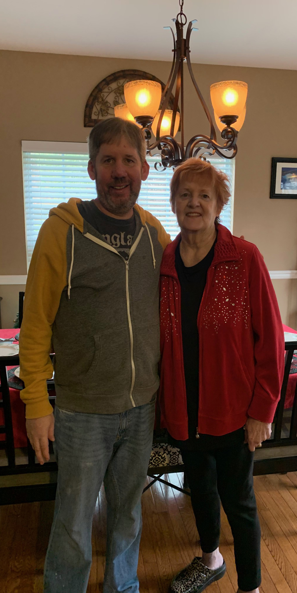

My mom in 2020 was diagnosed with Dementia and today she is in a nearby nursing home doing the best she can at age 86. I love her very much and I moved nearby to her to help the situation of support any way I can. I needed to and wanted to stay close to her. Perhaps I could have found a graphic design job out of state then or at a far NJ distance? I did that before with success. But at what cost as me being here was needed. In a way, my graphic design career was put on hold (in addition to the covid pandemic shut down) as I took a job as an online shopper nearby to pay the bills. It was relatable to my past profession. I designed food circulars in a corporate office as explained in this website. Today, I am finding those same items from the circular in the store for customers. I turned into a solid employee for ShopRite and then Walmart doing this type of work. However, my love to do graphic design is still burning strong. One day I will pursue this line of work when that day unfortunately comes where God calls for my mom to be with him in Heaven. I am not saying this to generate sympathy or create sadness. This is just the reality of life. I get it. I am just explaining this gap in time between this line of artistic work. I still stayed sharp. I even learned web design with online courses. Hire me because I am talented and I will fit in with your successful team. I just wanted to be candid with you to tell you what's up. Thank you for your understanding and have a great day.
THE FUTURE IS NOW! LET'S CHAT! EMAIL ME